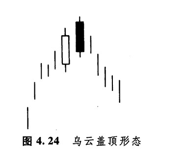
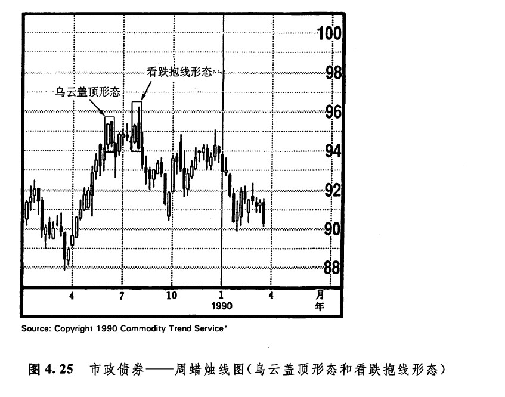
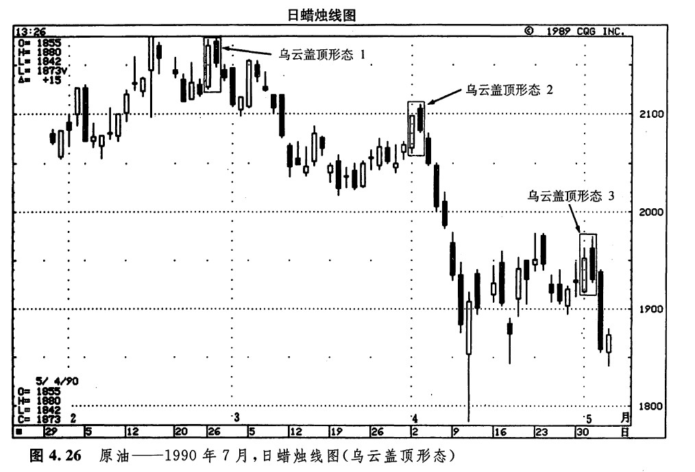
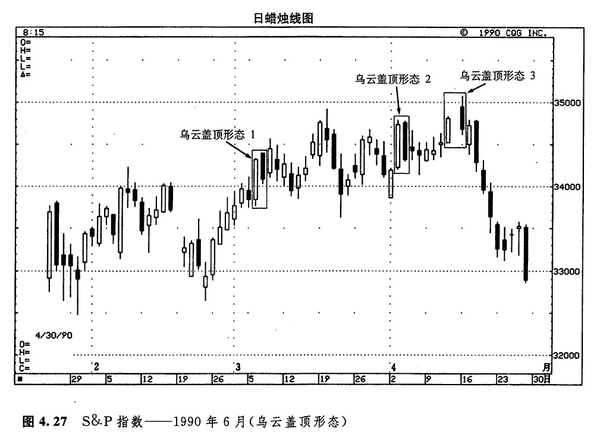
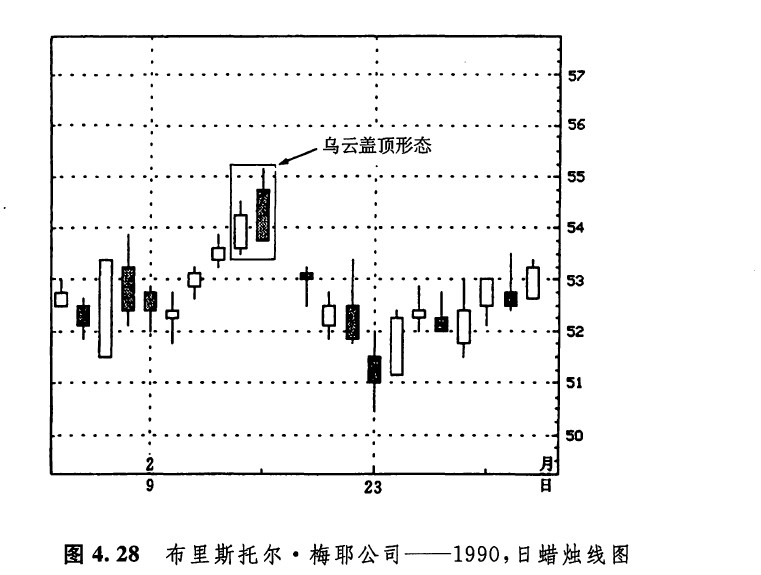

下面我们要研究的反转形态是乌云盖顶形态（或者说乌云线形态，如图4.24所示）。这种形态也是由两根蜡烛线组成的，属于顶部反转形态。它们一般出现在上升趋势之后，在有些情况下也可能出现在水平调整区间的顶部。在这一形态中，第一天是一根坚挺的白色实体；第二天的开市价超过了第一天的最高价（这就是说超过了第一天的上影线的顶端），但是，市场却收市在接近当日的最低价的水平，并且收市价明显地向下扎入到第一天白色实体的内部。第二天的黑色实体向下穿进第一天的白色实体的程度越深，则该形态构成顶部反转过程的可能性就越大。有些日本技术分析师要求，第二天黑色实体的收市价必须向下穿过前一天白色实体的50%。如果黑色实体的收市价没有向下穿过白色蜡烛线的中点，那么，当这类乌云盖顶形态发生后，或许我们最好等一等，看看是否还有进一步的看跌验证信号。

这种看跌形态背后的道理是很容易理解的。在形态发生之前，市场本来处于上升趋势之中。有一天，出现了一根坚挺的白色蜡烛线。第二天，市场在开市时便向上跳空。到此刻为止，牛方完全掌握着主动权。然而，此后，市场却没有继续上冲！事实上，市场收市在当日的最低价处，或者在最低价附近，并且这个收市价明显地向下扎进了前一天的实体内部。在这种情况下，多头头寸持有者的信心便开始动摇。还有一些人一直在找机会卖出做空，那么现在他们就得到了一个设置止损指令的参考水平——在乌云盖顶形态的第二日形成的新高价格水平。
下面列出了一些参考性因素，如果乌云盖顶形态具有这样的特征，则有助于增强其技术分量：
1.在乌云盖顶形态中，黑色实体的收市价向下穿入前一个白色实体的程度越深，则该形态构成市场顶部的机会越大。如果黑色实体覆盖了前一天的整个白色实体，那就形成了看跌吞没形态。在乌云盖顶形态中，黑色实体仅仅向下覆盖了白色实体的一部分。我们不妨把乌云盖顶形态比作日偏食，在这种情况下，月亮只遮住了太阳的一部分（换句话说，覆盖了部分白色实体）。那么，看跌吞没形态就成了日全食，在这种情况下，月亮遮住了太阳的全部（也就是说，覆盖了整个白色实体）。从这一点上说，作为顶部反转信号，看跌吞没形态比乌云盖顶形态具有更重要的技术意义。如果在乌云盖顶形态之后，或者在看跌吞没形态之后，出现了一根长长的白色实体，而且其收市价超过了这两种形态的最高价，那么这可能预示着新一轮上冲行情的到来。
2.乌云盖顶形态发生在一个超长期的上升趋势中，它的第一天是一根坚挺的白色实体，其开市价就是最低价（就是说，是秃脚的），而且其收市价就是最高价（就是说，是秃头的）；它的第二天是一根长长的黑色实体，其开市价位于最高价，而且收市价位于最低价（这是一个秃头秃脚黑色蜡烛线）。
3.在乌云盖顶形态中，如果第二个实体（即黑色的实体）的开市价高于某个重要的阻挡水平，但是市场未能成功地坚守住，那么可能证明牛方已经无力控制市场了。
4.如果在第二天开市的时候，市场的交易量非常大，那么这里就可能发生胀爆现象。具体说来，当日开市价创出了新高，而且开市时的成交量极重，可能意味着很多新买家终于下决心入市，踏上了牛市的“船”。随后，市场却发生了抛售行情。那么，很可能用不了太久，这群人数众多的新多头（还有那些早已在上升趋势中坐了轿子的老多头）就会认识到，他们上的这条船原来是“泰坦尼克”号。对期货交易商来说，极高的持仓量也是一种警告信号。
图4.25显示了乌云盖顶形态与看跌吞没形态的区别。1989年6月，有两根蜡烛线组成了一个乌云盖顶形态。前一根具有长长的白色实体，后一根具有长长的黑色实体。黑色实体的开市价为当前这轮涨势创出了新高，但它的收市价则接近其最低价，并且显著地向下穿入了前一天的白色实体之中。本图例所示为市政债券市场，当这个顶部反转形态出现后，该市场就向下回落了。几个星期后，市场遭到了最后的致命一击，此时出现了一个看跌吞没形态。从本实例可以看到，在乌云盖顶形态中，黑色的实体仅仅覆盖了前一日白色实体的一部分。而在看跌吞没形态中，黑色实体则完全地覆盖了前一日的白色实体。

在图4.26中，可以看到3个乌云盖顶形态。这三个形态每一个都有其他的看跌信号对它们进行了验证。下面我们依次进行单独的研究。

1.乌云盖顶形态1。这是理想乌云盖顶形态的一种变体。在这个乌云盖顶形态中，第二天的黑色实体的开市价，与前一日的最高价一致，而不是向上超过了它。本形态仅仅足以构成警告信号，但是，我们仍然应当把它视为一项负面因素。另一方面，这个乌云盖顶形态还标志着，牛方曾经企图向上突破由2月中旬的最高点形成的阻挡水平，但是这个企图已经遭到了挫败。
2.乌云盖顶形态2。在这里，除了这个乌云盖顶形态以外，还有其他的理由说明21美元的价格水平值得我们留神。在技术分析中，有一条基本的定理：原先的支撑水平一旦被突破，则转化为新的阻挡水平。这正是在21美元处发生的情况。请注意，21美元原本是一个支撑水平，但是一旦在3月9日被向下突破后，就转化为阻挡水平了。这一例乌云盖顶形态发生在4月的头两个交易日，在此期间，市场曾有过上冲的尝试，但失败了，由此证明了该阻挡水平的存在（第十一章将要研究支撑水平与阻挡水平角色变换的问题）。
3.乌云盖顶形态3。这里也显示了一个市场向上挑战阻挡区的失败过程，该阻挡区是由4月下旬的最高价形成的。
在上面这些实例中，疲弱的乌云盖顶形态恰巧都与阻挡水平不谋而合。其实这中间的关系并不简单，它揭示出一个重要的概念，其意义不仅在于一种技术指标与另一种技术指标的相互验证，而且还有更深刻的内容。有关问题是本书第二部分的核心内容，届时我们将研究如何把蜡烛图技术与其他技术分析工具结合起来。
在图4.27中，3月上旬出现了乌云盖顶形态1，它中止了之前为时2个星期的上冲行情。随后，市场展开了1个星期的调整。4月份，又形成了另外两个乌云盖顶形态。乌云盖顶2显示，之前2天的急剧上升可能已告完成。乌云盖顶形态3发生在4月中旬，这个形态尤其疲弱。为什么这个乌云盖顶形态的结果会如此软弱呢？其中的缘由与本形态形成时市场的心理过程有关。

正如过去所指出，乌云盖顶形态之所以具有负面意义，是因为以下基本原理：该形态第二根线的开市价本来已经创出了新高，但是在收市时，市场反而深深地向下传入了前一个白色实体的内部。那么，如果在某个乌云盖顶形态中，第二天的开市价不仅向上突破了前一天的最高价，同时还向上突破了数天之前的、数周之前的、甚而至于数月之前的最高价，然后当日再从这样的新高水平上失守下跌，后果会是什么样的呢？这样的局面将具有极其疲软的内涵。而这正是在本实例中4月里发生的情况。在乌云线形态3中，黑色的蜡烛线本来已经向上触及了至少过去3个月内的最高价格水平。但是，市场无力维持这样的高位，并且在收市时显著地返回到前一日的白色实体之内。
在图4.28中我们看到，自2月10日开始，市场一路上扬，但当2月中旬的乌云盖顶形态出现后，这段行情就截然地中止了。

下一篇：剌透形态（斩回线形态）
上一篇：吞没形态（抱线形态）